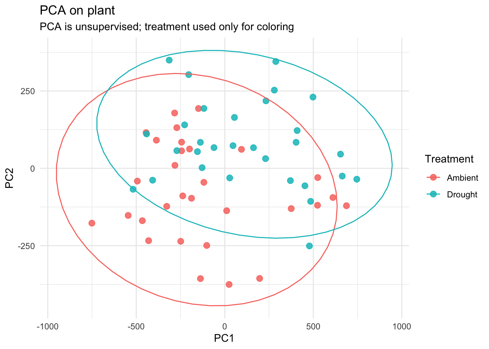

Warning: package 'ggplot2' was built under R version 4.5.2
library(tidyverse)
Warning: package 'tidyr' was built under R version 4.5.2
Warning: package 'readr' was built under R version 4.5.2
Warning: package 'purrr' was built under R version 4.5.2
Warning: package 'lubridate' was built under R version 4.5.2
── Attaching core tidyverse packages ──────────────────────── tidyverse 2.0.0 ──
✔ dplyr 1.1.4 ✔ readr 2.1.6
✔ forcats 1.0.1 ✔ stringr 1.6.0
✔ lubridate 1.9.5 ✔ tibble 3.3.0
✔ purrr 1.2.1 ✔ tidyr 1.3.2
── Conflicts ────────────────────────────────────────── tidyverse_conflicts() ──
✖ dplyr::filter() masks stats::filter()
✖ dplyr::lag() masks stats::lag()
ℹ Use the conflicted package (<http://conflicted.r-lib.org/>) to force all conflicts to become errors
library(psych) # Bartlett's test
Warning: package 'psych' was built under R version 4.5.2
Attaching package: 'psych'
The following objects are masked from 'package:ggplot2':
%+%, alpha
library(randomForest) # Random forest
randomForest 4.7-1.2
Type rfNews() to see new features/changes/bug fixes.
Attaching package: 'randomForest'
The following object is masked from 'package:psych':
outlier
The following object is masked from 'package:dplyr':
combine
The following object is masked from 'package:ggplot2':
margin
Load our data
# Dataplant <-read_csv("plant_data_fix.csv")
Rows: 60 Columns: 16
── Column specification ────────────────────────────────────────────────────────
Delimiter: ","
chr (1): Moisture_treatment
dbl (15): ID, Plan_species_richness, Soil_moisture, Soil_organic_matter, Pla...
ℹ Use `spec()` to retrieve the full column specification for this data.
ℹ Specify the column types or set `show_col_types = FALSE` to quiet this message.
Rows: 60 Columns: 16
── Column specification ────────────────────────────────────────────────────────
Delimiter: ","
chr (1): Moisture_treatment
dbl (15): ID, Plan_species_richness, Soil_moisture, Soil_organic_matter, Pla...
ℹ Use `spec()` to retrieve the full column specification for this data.
ℹ Specify the column types or set `show_col_types = FALSE` to quiet this message.
pca <-prcomp(microbes, center =TRUE, scale. =FALSE)summary(pca)
Importance of components:
PC1 PC2 PC3 PC4
Standard deviation 373.6441 165.8096 68.9310 46.87094
Proportion of Variance 0.8021 0.1580 0.0273 0.01262
Cumulative Proportion 0.8021 0.9601 0.9874 1.00000
Rows: 60 Columns: 16
── Column specification ────────────────────────────────────────────────────────
Delimiter: ","
chr (1): Moisture_treatment
dbl (15): ID, Plan_species_richness, Soil_moisture, Soil_organic_matter, Pla...
ℹ Use `spec()` to retrieve the full column specification for this data.
ℹ Specify the column types or set `show_col_types = FALSE` to quiet this message.
scores <-as.data.frame(pca$x)scores$Treatment <- plant$Moisture_treatmentplt <-ggplot(scores, aes(PC1, PC2, color = Treatment)) +geom_point(size =2.6, alpha =0.85) +theme_minimal() +labs(title ="PCA on plant", subtitle ="PCA is unsupervised; treatment used only for coloring")plt +stat_ellipse() # 95% CI

There is decent separation of the groups on the vertical axis, and less so on the horizontal axis.
PC1 has a proportion of variance of 0.8 and PC2 has a proportion of variance of 0.15. those proportions explain the observed variance.
There is a difference between groups
Bacterial CHAO contributes the most to PC1 and fungal CHAO contributes the most to PC2
Call:
randomForest(formula = Soil_moisture ~ ., data = train, ntree = 500, mtry = 2, importance = TRUE)
Type of random forest: regression
Number of trees: 500
No. of variables tried at each split: 2
Mean of squared residuals: 0.0003509601
% Var explained: 75.1
These models demonstrate similar variables importance when looking at microbe richness and soil moisture
While these two models differ in thier approach, they yeild similar results. In this case, I think the random forest model tended to overestimate some levels of importance compared to the PCA.